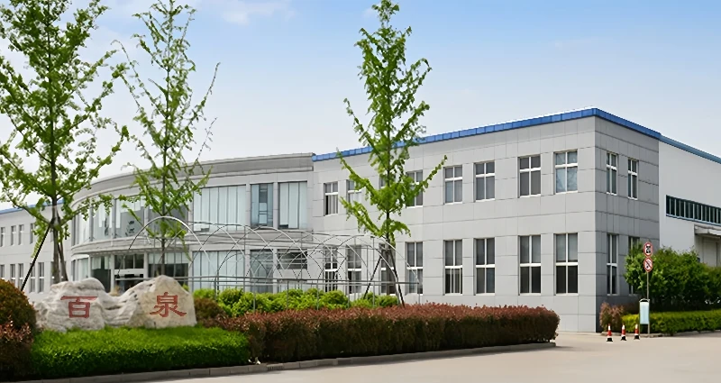

Food Ingredients
Food-grade phosphates, acidulants, preservatives, texturizers and other functional ingredients for food and beverage processing.
View food ingredientsCompany Profile
A China-based supplier of food ingredients, feed additives and industrial chemicals, built on decades of phosphate expertise and international trade experience.

Who we are
Bespring Chemical Co., Ltd. is a China-based ingredient and chemical supplier serving food, animal nutrition and industrial customers in more than 60 countries.
Our roots reach back to the 1970s and the former Pizhou No. 2 Chemical Plant, one of China’s early producers of food-grade and industrial-grade phosphates. That manufacturing heritage shaped the technical knowledge and quality-focused approach behind our business today.
Bespring was restructured under its current name in 2014. We now combine our own branded phosphate products with selected products from qualified production partners, giving international buyers a practical, coordinated source for ingredients and raw materials.
1970sPhosphate industry roots
60+Countries served
3Core market sectors
ChinaIntegrated supply base
What we supply
Our portfolio is organized around the application needs of food processors, feed manufacturers and industrial users.
Food-grade phosphates, acidulants, preservatives, texturizers and other functional ingredients for food and beverage processing.
View food ingredientsFeed-grade phosphates and selected nutritional additives for feed formulation and livestock production.
View feed additivesChemical raw materials for water treatment, industrial cleaning, mining and agricultural applications.
View industrial productsOur development
Our growth has followed one consistent direction: applying practical chemical expertise to the changing needs of customers and markets.
The business traces its roots to Pizhou No. 2 Chemical Plant and the production of food-grade and industrial-grade phosphates.
Production processes and product applications expanded across food, feed and industrial uses.
A major restructuring created Bespring Chemical Co., Ltd. and strengthened the company’s international business focus.
Bespring supplies customers in more than 60 countries through its phosphate expertise and network of production partners.
How we work
We help buyers move from product selection to export delivery with one coordinated commercial contact.
Product options are matched to the customer’s grade, application and market requirements.
Specifications and available compliance documents are confirmed before supply arrangements are finalized.
Our team coordinates packaging, order communication and international shipment requirements.
We stay engaged after the first order to support repeat purchasing and evolving product needs.
Explore our export servicesReview certificationsQuick answers
Clear answers for procurement teams evaluating a new ingredient or chemical supplier.
We supply phosphates, food ingredients, feed additives and chemicals for water treatment, industrial cleaning, mining and agriculture.
Bespring grew from a phosphate manufacturing business. Today, we supply our own branded phosphate products and selected products from qualified production partners through an integrated supply network.
We are based in Pizhou, Jiangsu Province, China, with access to China’s established ingredient, chemical and export logistics networks.
We serve customers in more than 60 countries, including markets across Asia, the Middle East, Europe and other regions.
Work with Bespring
Tell our export team your product, specification, quantity and destination market.